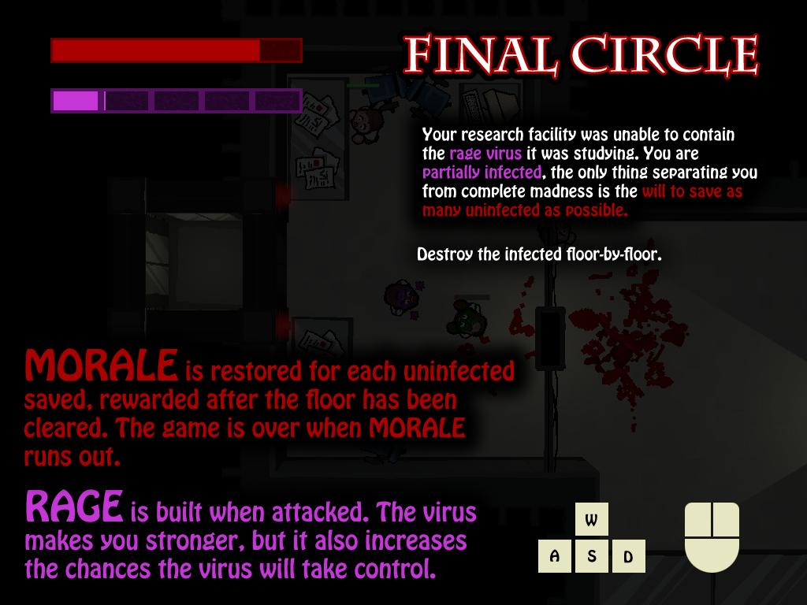

PLAY
Final Circle is my entry for
Ludum Dare 33
, a 48 hour game jam. Made in Unity 5.
If you have trouble running the WebGL player, I have standalones for
Windows
and
OSX
. Please use "Good" quality setting or higher.
The
Source
is also available.